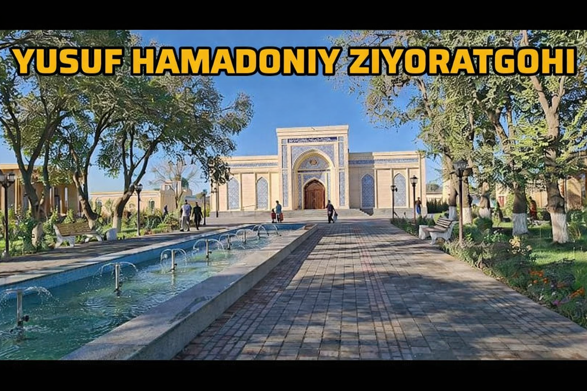
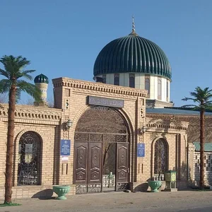

Yusuf Hamadoniy maqbarasi (yoki Ulli Pir) — XIX asrga tegishli boʻlgan va Shovot tumanining Beshmergan qishlogʻida joylashgan tarixiy obyekt[1]. Tarixiy obyekt Yusuf Hamadoniy majmuasinining asosini tashkil etadi. Bu yerda hamadonlik boy savdogar Xoji Yusuf dafn etilgan. Yusuf Hamadoniy maqbarasi davlat mulkiga tegishli. U Xorazm viloyati madaniyat boshqarmasi operativ boshqaruv huquqi asosida „Vaqf“ xayriya jamoat fondiga tekin foydalanish shartnomasi bilan berilgan[2]. Maqbara meʼmorchiligi Bino tepalikning ustiga qurilganligi sababli uzoqdan ham koʻrinib turadi. Maqbaraning maydoni 6x13 metrlik hududni egallaydi. Bino noyob meʼmoriy va dizayn uslubiga egaligi bilan ajralib turadi[3]. Yusuf Hamadoniy shaxsi Yusuf Hamadoniy Ahmad Yassaviy va Abduxoliq Gʻijduvoniyga ustozlik qilgan shaxs hisoblanadi[4]. Yusuf Hamadoniy „Xojagon-naqshbandiya“ tariqatining ayrim qoidalarini ishlab chiqqanligi bilan tanilgan. Xoja Hasan Andoqiy Buxoriy, Xoja Abdulloh Barraqiy Xorazmiy, Ahmad Yassaviy va Abduxoliq Gʻijduvoniy Yusuf Hamadoniydan soʻng uning xalifalari sifatida muridlariga peshvolik qilgan. „Rutbat ul-hayot“, „Kashf“, „Risola dar odobi tariqat“, „Risola dar axloq va munojot“ kabi asarlari mavjud[5].